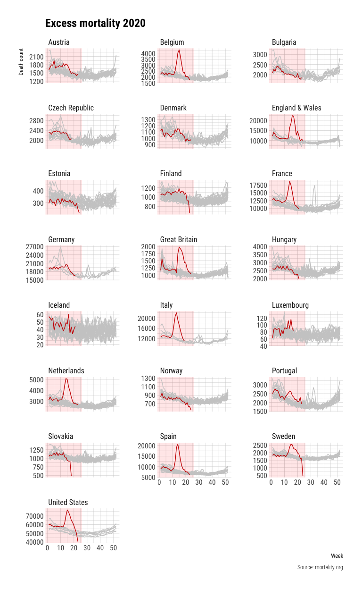
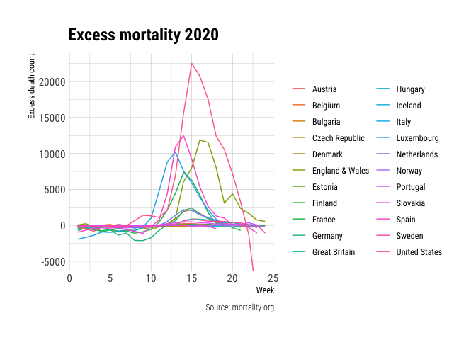
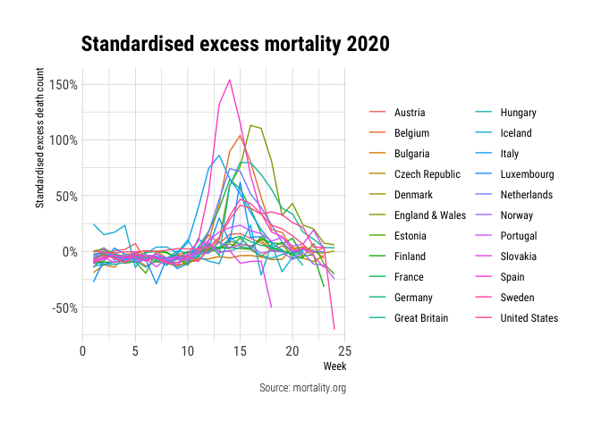
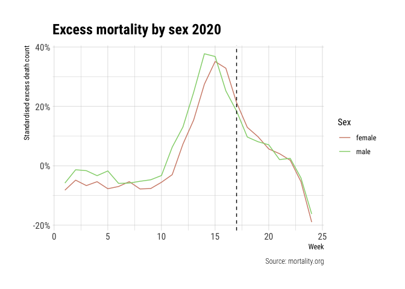
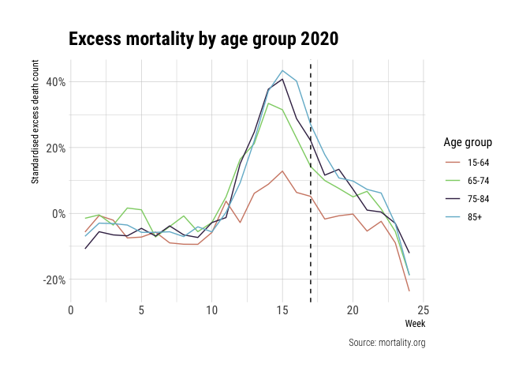
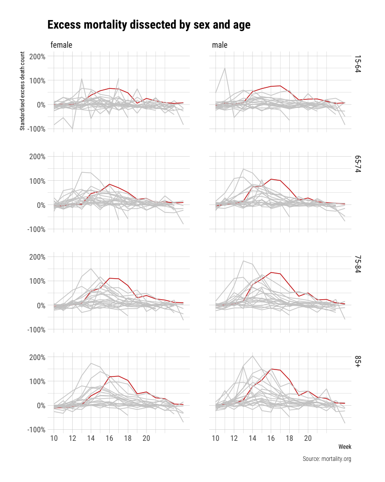

Excess Mortality in 2020
Official reported deaths due to COVID-19 are often under-reported for a multitude of reasons. The most important reason is that not all suspected cases get tested. Another way to measure COVID related deaths is to look at official reported total deaths. Administrative delays, however, make it that reported numbers are only reliable from a few weeks in the past. More recent numbers are often missing many deaths. The Human Mortality Database (HMD) provided detailed (yearly) mortality and population data for 41 selected countries. Recently, HMD published a dataset containing weekly mortality numbers in light of the COVID-19 pandemic. In this article we will explore this dataset to obtain insights in excess deaths for different countries.
Note: this article has been updated at the 26th of June. More recent data is used which includes more countries.
Load and process data
First we load some packages that we will use throughout the analysis
library(readxl)
library(tidyverse)
library(hrbrthemes)
library(lubridate)
library(janitor)
library(reshape2)The data is publicly available and can be loaded into R as
mf_data <- readr::read_csv("https://www.mortality.org/Public/STMF/Outputs/stmf.csv", skip=2)
knitr::kable(head(mf_data))| CountryCode | Year | Week | Sex | D0_14 | D15_64 | D65_74 | D75_84 | D85p | DTotal | R0_14 | R15_64 | R65_74 | R75_84 | R85p | RTotal | Split | SplitSex | Forecast |
|---|---|---|---|---|---|---|---|---|---|---|---|---|---|---|---|---|---|---|
| AUT | 2000 | 1 | m | 7 | 183 | 212 | 249 | 163 | 814 | 0.0005204 | 0.0035126 | 0.0376068 | 0.0951375 | 0.2318343 | 0.0109252 | 0 | 0 | 0 |
| AUT | 2000 | 1 | f | 2 | 104 | 141 | 338 | 468 | 1053 | 0.0001562 | 0.0020023 | 0.0195527 | 0.0614423 | 0.2243570 | 0.0132385 | 0 | 0 | 0 |
| AUT | 2000 | 1 | b | 9 | 287 | 353 | 587 | 631 | 1867 | 0.0003428 | 0.0027586 | 0.0274739 | 0.0723052 | 0.2262420 | 0.0121196 | 0 | 0 | 0 |
| AUT | 2000 | 2 | m | 4 | 195 | 195 | 259 | 187 | 840 | 0.0002974 | 0.0037430 | 0.0345912 | 0.0989583 | 0.2659694 | 0.0112741 | 0 | 0 | 0 |
| AUT | 2000 | 2 | f | 6 | 109 | 126 | 312 | 509 | 1062 | 0.0004687 | 0.0020986 | 0.0174727 | 0.0567159 | 0.2440122 | 0.0133516 | 0 | 0 | 0 |
| AUT | 2000 | 2 | b | 10 | 304 | 321 | 571 | 696 | 1902 | 0.0003809 | 0.0029220 | 0.0249834 | 0.0703344 | 0.2495474 | 0.0123468 | 0 | 0 | 0 |
The dataset contains multiple variables for the death counts for different age groups (starting with D) and the death rate (starting with R). Furthermore, most variables are not in a human-readable format yet. So let’s transform the dataset a bit.
mf_data <- mf_data %>%
janitor::clean_names() %>%
gather(starts_with("d"), key="age_group", value="death_count") %>%
gather(starts_with("r"), key="age_group2", value="death_rate") %>%
mutate(
sex = case_when(
sex == "m" ~ "male",
sex == "f" ~ "female",
sex == "b" ~ "both"
),
age_group = str_replace(age_group, "_", "-"),
age_group = str_sub(age_group, start=2),
age_group = if_else(age_group == "85p", "85+", age_group),
country = recode(country_code,
AUT = "Austria",
BEL = "Belgium",
BGR = "Bulgaria",
CZE = "Czech Republic",
DEUTNP = "Germany",
DNK = "Denmark",
ESP = "Spain",
EST = "Estonia",
FIN = "Finland",
FRATNP = "France",
GBRTENW = "England & Wales",
GBR_SCO = "Great Britain",
HUN = "Hungary",
ISL = "Iceland",
ITA = "Italy",
LUX = "Luxembourg",
NLD = "Netherlands",
NOR = "Norway",
PRT = "Portugal",
SVK = "Slovakia",
SWE = "Sweden",
USA = "United States")
) %>%
select(age_group, country, year, sex, week, death_count, death_rate)
knitr::kable(head(mf_data))| age_group | country | year | sex | week | death_count | death_rate |
|---|---|---|---|---|---|---|
| 0-14 | Austria | 2000 | male | 1 | 7 | 0.0005204 |
| 0-14 | Austria | 2000 | female | 1 | 2 | 0.0001562 |
| 0-14 | Austria | 2000 | both | 1 | 9 | 0.0003428 |
| 0-14 | Austria | 2000 | male | 2 | 4 | 0.0002974 |
| 0-14 | Austria | 2000 | female | 2 | 6 | 0.0004687 |
| 0-14 | Austria | 2000 | both | 2 | 10 | 0.0003809 |
Total excess deaths by country
The advantage of weekly mortality data is the opportunity to compare the mortality of March and April of this year with previous years. Below you find a plot of the weekly mortality data of the selected countries for all available years (differs by country). The 2020 mortality is shown as the red line and the pink/red area on the figures shows the period up to the current week (21 as of writing this).
plot_data <- mf_data %>%
mutate(is_2020 = year == 2020)
curr_week <- week(Sys.Date())
colour_pal <- c("#cccccc", "#cc0000")
# total not differentiated by sex
plot_data %>%
filter(sex == "both", age_group == "-total") %>%
ggplot(aes(x=week, y=death_count, colour=is_2020, group=year)) +
annotate("rect", xmin=-Inf, xmax=curr_week, ymin=-Inf, ymax=Inf, fill="red", colour=NA, alpha=0.1) +
geom_line(show.legend=FALSE) +
facet_wrap(~country, ncol=3, scales="free_y") +
scale_color_manual(values=colour_pal) +
labs(x="Week", y="Death count", title="Excess mortality 2020",
caption="Source: mortality.org") +
theme_ipsum_rc()
A few things stand out from this figure besides the COVID-19 mortality trends. First, larger countries show trends that are more smoooth than countries with smaller populations such as Iceland. Countries also seem to deal differently with the first and last week of the year: the UK reports high mortality in the first weeks of the year and low numbers at the end while the trend is reversed for Spain. Another thing to note is that not all countries always report the final data for 2020 and the lag of reporting differs significantly between countries. The US shows unprecedented low mortality data deaths at the end of the reported period in 2020, which is likely caused by incomplete data for these weeks.
The 2020 mortality data shows clear differences between countries. Excess mortality is referred to the extra deaths above the regular death count expected in a country. While some countries reports no to very low excess mortality, others like Belgium, England, the Netherlands and Spain show significant excess mortality.
Noticeably, Sweden seems to be the only Nordic country that shows significant excess mortality. Furthermore, the only two countries that at some point took the group immunity approach seriously seems to not only show high excess mortality at the peak but also still report significant excess mortality at the latest reported week. This, while other countries have mostly returned to the baseline mortality.
Excess mortality comparison between countries
To better compare the excess mortality between countries we will estimate the excess mortality for all countries. We do this by computing the 5-year average of the total mortality per week from the years 2015 to 2019. We then subtract the mortality numbers for 2020 to arrive at an estimate for the excess mortality. Note that this approach does not take into account that the 5-year historic mortality does not necessarily equal the expected mortality in 2020 without COVID-19. This might differ for a variety of reasons like a bad flu season or changes in demographics.
excess_deaths <- plot_data %>%
filter(year >= 2015) %>%
group_by(country, sex, age_group, week, is_2020) %>%
summarise(
death_count = mean(death_count)
) %>%
dcast(country + sex + age_group + week ~ is_2020, value.var="death_count") %>%
mutate(excess_death = `TRUE` - `FALSE`,
excess_death_std = excess_death / `FALSE`) %>%
select(-`TRUE`, -`FALSE`) %>%
na.omit()
excess_deaths %>%
filter(sex == "both", age_group == "-total") %>%
ggplot(aes(x=week, y=excess_death, colour=country)) +
geom_line() +
coord_cartesian(ylim=c(-5000, NA)) +
labs(x="Week", y="Excess death count", title="Excess mortality 2020",
caption="Source: mortality.org", colour="") +
theme_ipsum_rc()
This figure further supports the claim that the reported mortality data of the USA is incomplete (it does not show the even larger negative excess in later weeks). Still, this figure makes it hard to compare the numbers between countries since we are looking absolute excess deaths. This is due to the fact that the total mortality of a country is higher for countries with larger populations such as Spain, England and the USA. However, these statistics do represent actual people and actual suffering.
Instead of the total excess we also compute a standardised excess death measure by dividing the excess deaths by the historic mortality data from 2015 to 2019. Furthermore, we remove the data from week 23 onwards for the USA, since this is clearly incomplete.
excess_deaths_filter_US <- excess_deaths %>%
filter(!(country == "United States" & week >= 23))
excess_deaths_filter_US %>%
filter(sex == "both", age_group == "-total") %>%
ggplot(aes(x=week, y=excess_death_std, colour=country)) +
geom_line() +
scale_y_continuous(labels = scales::percent_format()) +
labs(x="Week", y="Standardised excess death count", title="Standardised excess mortality 2020",
caption="Source: mortality.org", colour="") +
theme_ipsum_rc()
This figure tells a very different story. While England is showing a high excess mortality in absolute numbers and relative numbers, preliminary data does paint a different picture for the USA. Smaller countries like Belgium, the Netherlands and Sweden do show up less favourable in this figure. As previous figures already suggested: Sweden and England are in the worst shape in recent weeks. Both countries had their peak at a later time and do not show the same large decline as other comparable European countries.
Differences between sexes and ages
Previous analyses have focused on differences between countries while considering the entire population including both sexes and all ages. By now, we learnt that men are not equally impacted by COVID-19 as women. Furthermore, COVID-19 seems to be especially gruesome for the elderly.
To get insights into we start by looking at the standardised excess deaths for both sexes for all populations combined. Note that the standardised excess deaths for all countries combined is a bit tricky. Simply adding all deaths together would heavily bias towards countries with high populations, while taking an average of the standardised excess deaths over countries dismisses the population size entirely. Despite these flaws let’s look at the average of the standardised excess deaths.
excess_deaths_sex <- excess_deaths_filter_US %>%
group_by(sex, age_group, week) %>%
summarise(excess_death_std = mean(excess_death_std),
n_countries = n()) %>%
ungroup()
last_full_week <- excess_deaths_sex %>%
filter(n_countries == max(n_countries)) %>%
.$week %>%
max
excess_deaths_sex %>%
filter(sex %in% c("female", "male"), age_group == "-total") %>%
ggplot(aes(x=week, y=excess_death_std, colour=sex)) +
geom_line() +
geom_vline(aes(xintercept=last_full_week), linetype="dashed") +
scale_y_continuous(labels = scales::percent_format()) +
scale_colour_ipsum() +
labs(x="Week", y="Standardised excess death count", title="Excess mortality by sex 2020",
caption="Source: mortality.org", colour="Sex") +
theme_ipsum_rc()
Interestingly, it seems that the excess mortality data for men and women look similar but are shifted by one week. The peak for men seems to start one week before women start showing an increase. This might explain the initial discrepancy between men and women as reported in March and April and the lack of reporting of this phenomonum in May. The dashed line represents the last week for which we have data of all 15 countries. Most noticeably, between week 19 and week 20 we observe an increase in the excess death count but this is because England is the only reporting country in week 20.
Now, let’s look at the differences between age groups.
excess_deaths_sex %>%
filter(sex == "both", age_group %in% c("15-64", "65-74", "75-84", "85+")) %>%
ggplot(aes(x=week, y=excess_death_std, colour=age_group)) +
geom_line() +
geom_vline(aes(xintercept=last_full_week), linetype="dashed") +
scale_y_continuous(labels = scales::percent_format()) +
scale_colour_ipsum() +
labs(x="Week", y="Standardised excess death count", title="Excess mortality by age group 2020",
caption="Source: mortality.org", colour="Age group") +
theme_ipsum_rc()
The data is quite telling: excess mortality increases with age. I omitted the data for the age group of 0-14, because of the large fluctuations in data due to low mortality numbers.
Lastly, we dissect the data by sex and age group to compare individual countries trends. Iceland is removed because of its small population size and therefore heavily fluctuating mortality data.
excess_deaths_filter_US %>%
filter(sex != "both", age_group %in% c("15-64", "65-74", "75-84", "85+"), week >= 10,
country != "Iceland") %>%
mutate(is_UK = if_else(country == "England & Wales", TRUE, FALSE)) %>%
ggplot(aes(x=week, y=excess_death_std, colour=is_UK, group=country)) +
geom_line() +
facet_grid(age_group ~ sex) +
scale_y_continuous(labels=scales::percent_format()) +
scale_x_continuous(breaks=seq(10, 20, 2)) +
scale_colour_manual(values=colour_pal) +
labs(x="Week", y="Standardised excess death count", title="Excess mortality dissected by sex and age",
caption="Source: mortality.org", colour="Age group") +
theme_ipsum_rc() +
theme(legend.position = "none")
This figure is the most surprising to me. All others figures confirm from what I have read so far with increasing and then decreasing excess mortality and differences between countries. However, this figure shows a striking pattern for England. It seems that excess mortality is much larger for the age group 15-64 in England than any other observed country (top two figures). Another striking observation is that men excess death is much higher in England than other countries (right figures).
The last figure shows the importance of dissecting the data across multiple variables to find patterns that otherwise would be hidden do to aggregation (see Simpson Paradox).
Conclusion
Thank you for reading this initial analysis of the new dataset as provided by the excellent HMD project. Stay safe out there!